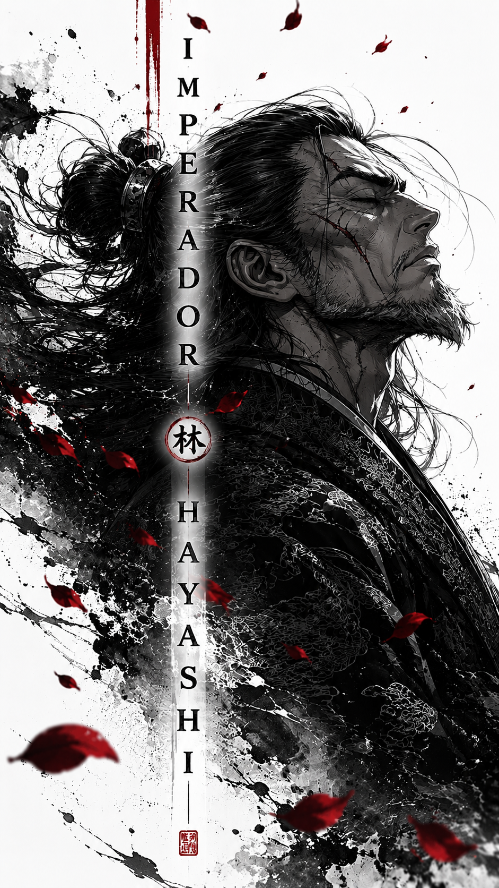
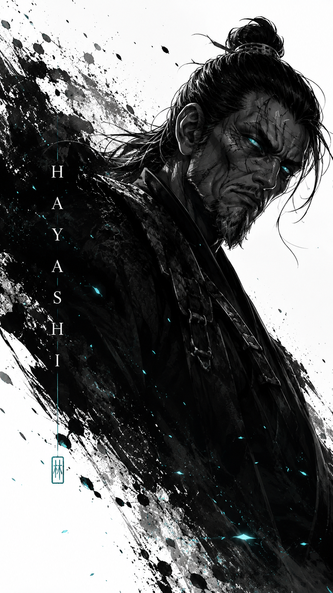
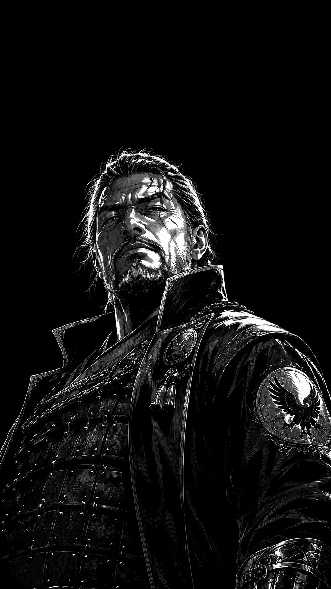

Entre neve, sangue e silêncio, nasceu o clã que governou o norte durante gerações. Os Hayashi não conquistaram poder apenas pela espada. Eles transformaram disciplina, honra e medo em um império absoluto.
Muito antes das guerras fragmentarem o continente, o nome Hayashi já era temido entre montanhas congeladas e fortalezas militares erguidas na neve.
O clã nasceu como uma pequena força militar responsável por proteger as regiões do norte contra invasores, mas rapidamente transformou disciplina em domínio absoluto.
Enquanto outros líderes buscavam riquezas, os Hayashi construíam algo muito mais perigoso: um exército movido pela lealdade cega ao imperador.
IMPÉRIO HAYASHI

Sob o comando do Imperador Hayashi, o clã alcançou sua era mais poderosa.
Fortalezas foram erguidas, cidades passaram a servir diretamente ao império, e os exércitos do norte se tornaram máquinas perfeitas de guerra.
Nenhum soldado recuava. Nenhum comandante questionava ordens. A disciplina Hayashi se tornou uma lenda.

O soberano absoluto do norte. Um líder frio, calculista e responsável por transformar os Hayashi no maior império militar da região.

O principal comandante militar do império. Respeitado por soldados e temido pelos inimigos.

Capitão do clã Hayashi. Um guerreiro marcado pela guerra e pela lealdade ao império.

Um oficial respeitado dentro do império. Sua presença representa honra, disciplina e obediência militar.

Conhecida como a luz do império. Hana representa esperança, elegância e o peso do sangue Hayashi.
Mesmo cercado pela guerra e pelo caos, o nome Hayashi continua ecoando entre montanhas, fortalezas e campos congelados.
VOLTAR AOS CLÃS